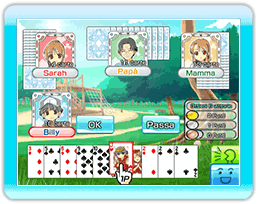

Lo scopo del gioco è scartare tutte le carte dalla tua mano prima degli altri per diventare "Daifugo", ovvero "la persona più ricca".
Il 3 è la carta più bassa, seguita,
a salire, da 4, 5, 6, 7, 8, 9, 10, J, Q, K, A fino al 2, la carta più alta. Se usi il Jolly, sarà questa la carta più alta, ma ricorda che il 3 di picche sconfigge il Jolly.
- Chi possiede il 3 di quadri
inizia a giocare e diventa anche il mazziere. Dalla seconda partita in poi, il giocatore che si è classificato in quarta posizione nella partita precedente diventa il mazziere. Questa sarà la regola per decidere il mazziere in ogni turno successivo. Il mazziere è anche il primo a iniziare.
- Ogni giocatore deve scartare
una carta più alta di quella appena giocata.
- Se non hai carte da giocare o non vuoi giocare una carta, puoi passare il turno.
- Se tutti passano, si inizia un
nuovo turno partendo dall'ultima persona che ha giocato una carta nel turno precedente.
- Il mazziere può decidere di
giocare tutte le carte uguali che vuole, ad esempio, se ha 3 re, può giocarne 3, se ha 2 assi, può metterne giù 2, ecc.
- Puoi giocare tre o più carte in scala, purché siano dello stesso seme, ad esempio: 5, 6, 7 di cuori.
- Se il mazziere mette giù più di una carta, i giocatori successivi devono giocare un identico numero di carte di valore superiore.
- Ripetendo i passaggi dal 2 al 7, il giocatore che per primo finisce le carte è il vincitore del turno.
- All'inizio del secondo turno,
dopo la distribuzione delle carte, il 1° e il 4° giocatore si scambiano 2 carte, mentre il 2° e il 3° si scambiano 1 carta.
Il 1° e il 2° cedono carte non necessarie, mentre il 3° e il 4° cedono le carte più alte.
Quando gli scambi sono terminati, ha inizio il secondo turno.
Il primo giocatore che totalizza 6 punti vince la partita. Il 1° classificato riceve 2 punti, il 2° 1 punto, il 3° e il 4° nessun punto.
●Revolution (Rivoluzione)
Quando giochi 4 o più carte,
dai origine a una "Rivoluzione", dopodiché i valori delle carte si invertono: la carta più alta, il 2, diventa la più bassa e il 3, la più bassa, diventa la più alta.
●Capital Fall (Crollo)
Se il 1° classificato non mantiene
la propria posizione nel secondo turno, nel turno successivo partirà come se si fosse piazzato al quarto posto.
●Cutting Eights (Otto interrotto)
Quando viene giocato un 8, da solo o in combinazione con altre carte, ha inizio un nuovo turno, dove il mazziere è il giocatore che ha scartato l'8.
●Joker (Jolly)
Puoi utilizzare il Jolly al posto di qualsiasi altra carta, di cui assumerà il valore.
●Spade 3s (Tre di picche)
Con il 3 di picche puoi battere
un Jolly. Quando succede, il turno finisce e se ne inizia uno nuovo a partire dalla persona che ha giocato il 3 di picche.
※Durante una "Revolution",
la regola "Spade 3s" non é valida.
●Bound (Vincolo)
Se due giocatori di fila scartano
carte dello stesso seme, quelli che rimangono sono costretti a giocare carte di quel seme per il resto del turno.
※L'uso della regola "Bound"
non è consentito quando si gioca sulla Nintendo WFC.
●Violation Loss (Vittoria sleale)
Se vinci giocando un 2, un 8 o un Jolly, perderai per "Violation Loss".
Anche se giochi combinazioni di più carte che comprendono un 2, un 8 o un Jolly, incorrerai in questa sconfitta per infrazione.
※Se giochi un 3 durante
"Revolution", incorrerai in una "Violation Loss".